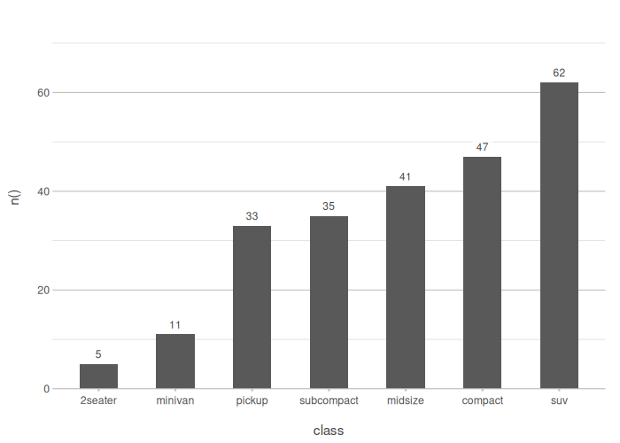
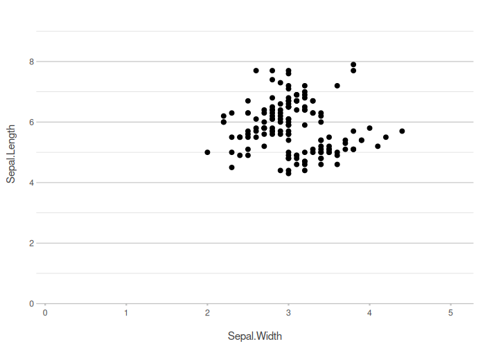
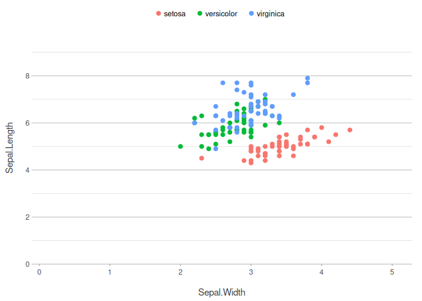
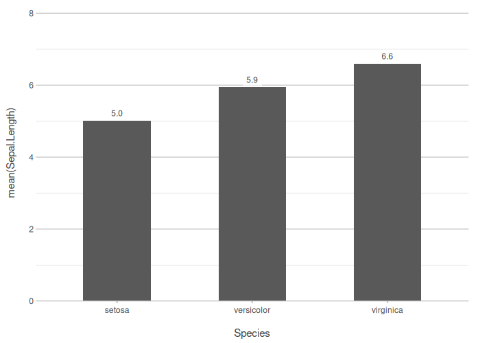
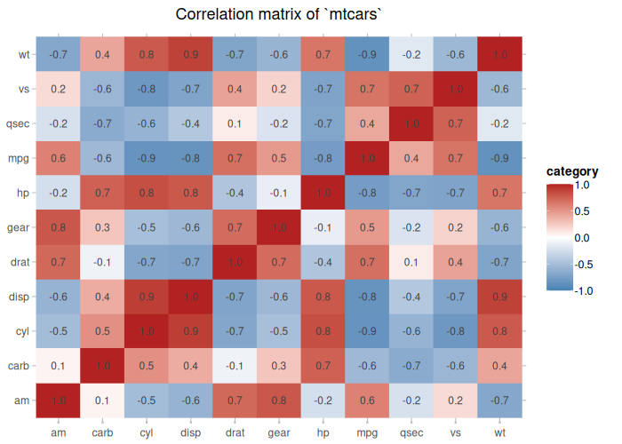
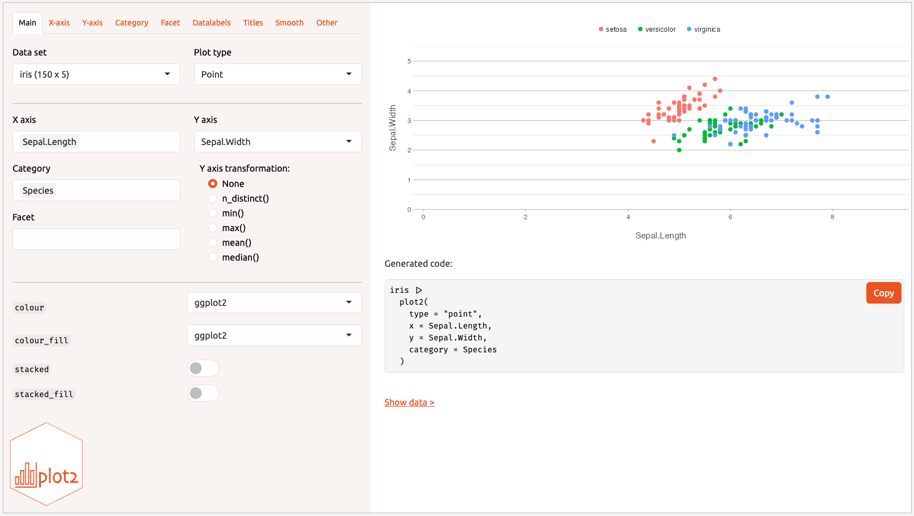

ggplot2, without the boilerplate.
plot2 is a single-function wrapper around ggplot2 that handles the routine work — grouping, aggregating, sorting, facetting, labelling — so you do not have to. It returns a standard ggplot object, so every ggplot2 extension and layer works as usual.
Install from CRAN or r-universe:
install.packages("plot2", repos = c("https://cran.r-project.org",
"https://msberends.r-universe.dev"))The same chart, two ways
A sorted column chart of vehicle counts per class, with data labels. The dataset mpg is bundled in ggplot2.
# ggplot2 + dplyr + forcats
library(ggplot2)
library(dplyr)
library(forcats)
mpg |>
count(class) |>
mutate(class = fct_reorder(class, n)) |>
ggplot(aes(x = class, y = n)) +
geom_col(width = 0.6) +
geom_text(aes(label = n), vjust = -0.5, size = 3.5) +
scale_y_continuous(expand = expansion(mult = c(0, 0.15))) +
labs(x = "Vehicle class", y = "Count") +
theme_minimal()
Both produce the same chart. The difference is in how much you write.
What you stop writing
| Task | ggplot2 | plot2 |
|---|---|---|
| Aggregate then plot |
group_by() + summarise() + ggplot() + geom_col()
|
plot2(x = a, y = mean(b)) |
| Sort bars | mutate(fct_reorder(...)) |
x.sort = "freq-desc" |
| Group by colour |
aes(fill = var) for bars, aes(colour = var) for points, each needing its own scale_*
|
category = var |
| Set a colour palette |
scale_fill_manual(values = ...) or scale_colour_manual(values = ...) depending on geom |
colour = c(...) in all cases |
| Facet | + facet_wrap(~var) |
facet = var |
| Data labels | + geom_text(aes(label = ...), vjust = ...) |
automatic on discrete axes |
| Stacked / filled bars |
geom_col(position = "stack") + scale |
stacked = TRUE / stacked_fill = TRUE
|
| Clean axis expansion | scale_y_continuous(expand = expansion(...)) |
built-in default |
Examples
All examples below use datasets bundled in base R or ggplot2.
The four arguments: x, y, category, facet
plot2 is built around four named arguments. That is all you need for most plots:
# x and y: plot2 picks the type. Two numerics → scatter.
iris |> plot2(x = Sepal.Width, y = Sepal.Length)
# category: colours the groups — works the same regardless of geom type.
# In ggplot2 you would use aes(fill = ...) for bars and aes(colour = ...) for
# points, each requiring its own scale_*. Here it is always category =.
iris |> plot2(x = Sepal.Width, y = Sepal.Length, category = Species)
# Categorical x → column with data labels. Inline aggregation in y.
iris |> plot2(x = Species, y = mean(Sepal.Length))
Colour
colour = sets the palette for any plot type — no need to choose between scale_fill_* and scale_colour_*:
iris |> plot2(x = Sepal.Width, y = Sepal.Length, category = Species,
colour = "viridis")
iris |> plot2(x = Sepal.Width, y = Sepal.Length, category = Species,
colour = c(setosa = "#3F681C", versicolor = "#375E97", virginica = "#FFBB00"))When you need to distinguish the stroke from the fill (e.g. bars with a coloured border), colour controls the stroke and colour_fill controls the interior:
Inline aggregations
Any summarising function works directly in the y argument — no group_by() or summarise() needed:
mpg |> plot2(x = class, y = mean(hwy))
mpg |> plot2(x = class, y = median(cty))
mpg |> plot2(x = class, y = n())
mpg |> plot2(x = class, y = n(), category = drv, stacked_fill = TRUE)Titles accept the same inline expressions:
Special plot types
# Dumbbell: compare two groups side by side
mpg |> plot2(x = manufacturer, y = mean(hwy), category = drv,
type = "dumbbell",
x.sort = "freq-desc")
# Histogram with automatic bin width
diamonds |> plot2(x = price, type = "hist")
# Stacked column
mpg |> plot2(x = class, y = n(), category = drv, stacked = TRUE)Correlation matrix
mtcars |>
cor() |>
plot2(datalabels = TRUE,
colour = c("steelblue", "white", "firebrick"),
title = "Correlation matrix of `mtcars`")
Full ggplot2 compatibility
plot2 returns a standard ggplot object. Any ggplot2 layer, scale, or extension can be appended:
mpg |>
plot2(x = class, y = mean(hwy), x.sort = "freq-desc") +
geom_hline(yintercept = mean(mpg$hwy), linetype = "dashed") +
labs(caption = "Dashed line: overall mean")Going further
plot2 supports secondary y-axes, Google and system fonts, geographic plots via sf objects, regression model objects, viridis and custom colour palettes, and an interactive Shiny-based plot builder.
The package ships with admitted_patients, a synthetic hospital dataset used throughout the full vignette. For an overview of every supported plot type, see the supported types reference.
# Build any plot interactively — all plot2 arguments available in the UI
iris |> create_interactively()
Ways to call plot2()
Like base plot(), all input styles work:
Getting involved
Issues, feature requests, and pull requests are welcome at https://github.com/msberends/plot2. Familiarity with ggplot2 and the tidyverse is especially useful as the package continues to develop.